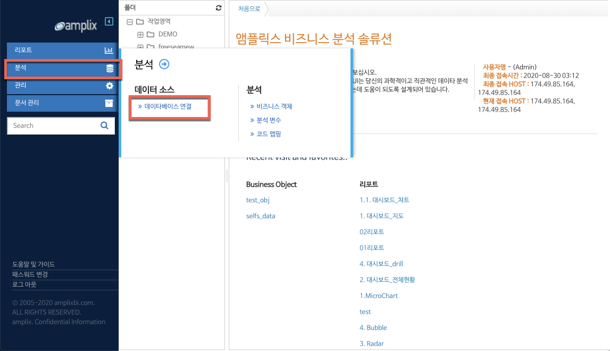
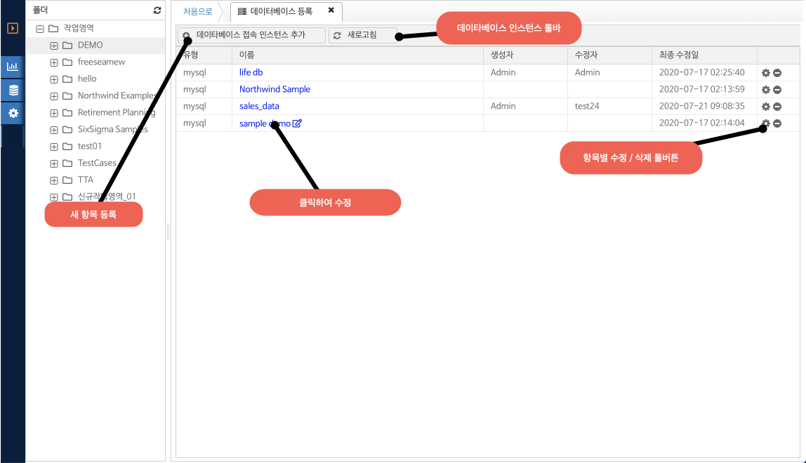
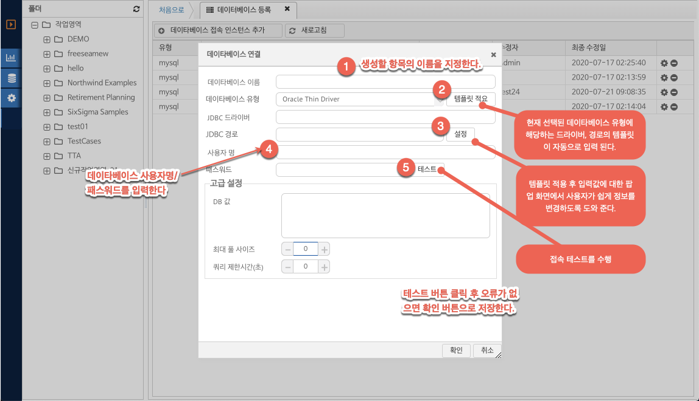

네비게이션
5. 데이터베이스 연결
분석을 위한 데이터베이스 연결 방법에 대해 안내합니다.
메인 메뉴의 분석 메뉴의 데이터베이스 연결 항목을 선택합니다.

(그림 : 데이터베이스 연결 메인 메뉴)
데이터베이스 연결 화면 레이아웃
데이터베이스 연결 화면이 탭 작업 영역에 나타난다. 화면 레이아웃 구성은 아래와 같다.

(그림 : 데이터베이스 연결 화면 레이아웃 및 기능)
데이터베이스 접속 인스턴스 추가
툴바의 데이터베이스 접속 인스턴스 추가 버튼을 클릭 하여 새로운 데이터베이스 인스턴스를 생성한다.
데이터베이스 접속 정보 입력

(그림 : 데이터베이스 연결 설정 화면 레이아웃 및 기능)
고급설정
DB값 : SQL 접속을 검증할 수 있는 기본 SQL 쿼리를 입력 한다. 데이터베이스 접속 성공 / 실패 여부를 판별하는 쿼리 문장의 의미를 가진다.
최대 풀 사이즈 : 데이터베이스 접속 풀의 사이즈를 설정한다.
- 기본값 : 0 (최대 풀 사이즈를 커넥션 풀의 디폴트값으로 사용)
쿼리 제한 시간 : 리포트에서 실행되는 쿼리의 제한 시간을 초 단위로 지정하여 지정시간을 초과하는 경우 사용자에게 오류 메시지를 보여 준다.
- 기본값 : 0 (쿼리 실항시간을 커넥션 풀의 디폴트값으로 사용)